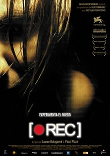
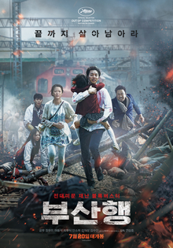
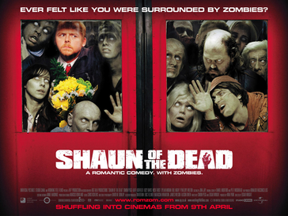
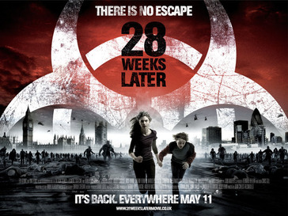
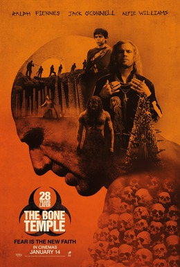

MY top 5 zombie movies
REC (2007)

Released in 2007, the Spanish horror film [REC] directed by Jaume Balagueró and Paco Plaza is a masterclass in the found-footage genre. The story follows a television reporter, Ángela Vidal, and her cameraman as they shadow a routine late-night firefighter call to a sealed-off apartment building in Barcelona. They quickly realize an aggressive, rabies-like viral outbreak has infected the tenants, turning them into rabid, flesh-eating predators. The movie thrives on claustrophobic elements, utilizing first-person camera perspectives, shaky-cam motion, and the harsh glare of a camera's night-vision mode to heighten dread. By trapping characters within a strictly quarantined, dark building with escalating terror and nowhere to run, the film delivers relentless pacing and unmatched visceral realism.
Train to Busan (2016)

Released in 2016, the South Korean zombie thriller Train to Busan directed by Yeon Sang-ho is a high-octane masterpiece of modern horror and suspense. The story follows a stressed-out fund manager and his young daughter as they board a high-speed KTX train from Seoul to Busan, just as a catastrophic viral outbreak abruptly plunges the entire country into chaos. The film relies on relentless, fast-paced action elements, claustrophobic enclosed spaces, and brilliant social commentary on human selfishness and solidarity during a crisis. By restricting the majority of the terrifying chaos to the narrow, vibrating compartments of a moving train, the movie forces its characters into impossible corners, delivering intense emotional stakes alongside thrilling, adrenaline-fueled survival horror.
Shaun of the Dead (2004)

Released in 2004, the British horror-comedy film Shaun of the Dead directed by Edgar Wright is a brilliant genre-defining parody and heartfelt tribute to classic zombie cinema. The story follows Shaun, an unmotivated electronics salesman whose mundane routine of pub-crawling with his slacker best friend is abruptly upended when a sudden zombie apocalypse overruns London. The movie thrives on satirical elements, blending witty British deadpan humor, sharply choreographed comedic violence, and clever visual foreshadowing. By juxtaposing the horrific, flesh-eating chaos with the tedious, everyday banalities of modern working-class life—like hangovers, broken relationships, and local pub culture—the film crafts a uniquely hilarious yet surprisingly touching survival story.
28 Weeks Later (2007)

Released in 2007, the British post-apocalyptic horror film 28 Weeks Later directed by Juan Carlos Fresnadillo is a terrifying, high-stakes sequel to Danny Boyle's original masterpiece. The story takes place six months after the devastating rage virus outbreak, focusing on the U.S. military as they attempt to repopulate a safe zone in London. The fragile security collapses when a carrier brings the virus back inside, plunging the green zone into immediate, chaotic annihilation. The movie thrives on relentless pursuit elements, frantic tracking shots, and a deeply unsettling atmosphere of institutional failure. By emphasizing government quarantine breaches, aerial devastation, and the horrific moral dilemmas of martial law, the film delivers a relentless, adrenaline-pumping look at human survival against impossible odds.
28 Yeats Later: The Bone Temple

Released in 2026, the post-apocalyptic horror film 28 Years Later: The Bone Temple directed by Nia DaCosta serves as a chilling, imaginative expansion of the iconic rage virus franchise. The story follows a young boy named Spike on a dangerous quest across the mainland, where he is drawn into a sinister cult led by Jimmy Crystal. Meanwhile, a scientist named Dr. Kelson makes a groundbreaking yet perilous connection with an intelligent Alpha infected known as Samson. The film thrives on dark psychological elements, cult-like fanaticism, and profound shifts in how humanity interacts with a mutating epidemic. By emphasizing that corrupted human survivors can be far more monstrous than the infected themselves, the movie delivers a haunting, gritty narrative full of intense moral decay, atmospheric dread, and shocking narrative turns.